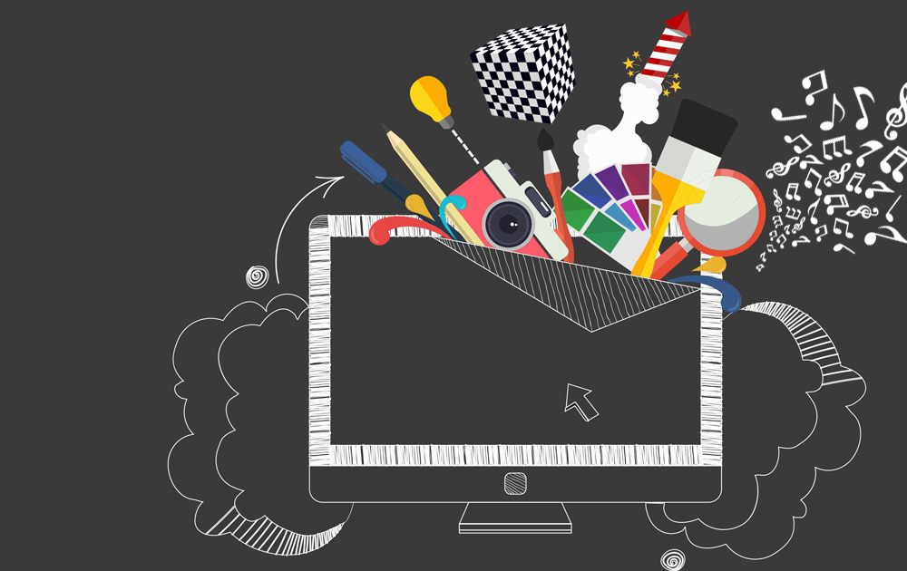

Введение развитием письменности практическая польза графики отошла на второй план, оставив ей декоративный характер. Теперь она использовалась в рукописях и пергаментах для украшения и пояснения текста. Выдавленные наскальные линии эволюционировали в легкую штриховку, нарисованные линии и черты, даже сам термин «графика» поначалу относился к каллиграфии, имея греческое происхождение (от ????? – пишу). Все последующие эпохи считали рисунок основой графики, а по мнению Микеланджело, и вовсе высшей точкой изобразительного искусства. Однако в ту пору рисунок не имел самостоятельного значения, приобретя таковое лишь в XVII-XVIII веках. Позднее с развитием промышленной полиграфии графика определялась как искусство, основанное на контрасте, четких линиях и рисунке, где кроме контурной линии используются также точки, штрихи и пятно.
Графический дизайн — художественно-проектная деятельность по созданию гармоничной и эффективной визуально-коммуникационной среды. С другой стороны, графический дизайн − это форма визуальной коммуникации с использованием текста, изображений или продвижения посыла для представления информации. Графический дизайн — художественно-проектная деятельность по созданию гармоничной и эффективной визуально-коммуникационной среды. С другой стороны, графический дизайн − это форма визуальной коммуникации с использованием текста, изображений или продвижения посыла для представления информации. Графический дизайн вносит инновационный вклад в развитие социально-экономической и культурной сфер жизни, способствуя формированию визуального ландшафта современности. Разновидность дизайна, модернизированная форма рисованной и печатной прикладной графики (типографики) с использованием новых промышленных технологий (компьютерная графика, веб-дизайн), тиражирования и внедрения дизайн-продукта в среду визуальной коммуникации. Искусство графического дизайна включает в себя целый ряд когнитивных навыков и ремесел, включая типографику, разработку изображений и верстку страниц.
Текст пункта 1.2
Графический дизайн — художественно-проектная деятельность по созданию гармоничной и эффективной визуально-коммуникационной среды. С другой стороны, графический дизайн − это форма визуальной коммуникации с использованием текста, изображений или продвижения посыла для представления информации.Графический дизайн — художественно-проектная деятельность по созданию гармоничной и эффективной визуально-коммуникационной среды. С другой стороны, графический дизайн − это форма визуальной коммуникации с использованием текста, изображений или продвижения посыла для представления информации.